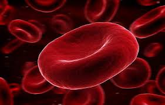

लाल रक्त कोशिका

लाल रक्त कोशिका मानव शरीर में रक्त की सबसे प्रमुख कोशिका है। यह कोशिकाएँ रीढ़धारी प्राणियों के श्वसन अंगों से ऑक्सीजन लेकर उसे शरीर के विभिन्न अंगों की कोशिकाओं तक पहुंचाने का कार्य करती हैं।
- इन कोशिकाओं में केन्द्रक अनुपस्थित होता है।
- लाल रक्त कोशिकाएँ श्वसन अंगों से ऑक्सीजन लेकर सारे शरीर में पहुंचाने का और कार्बन डाईआक्साईड को शरीर से श्वसन अंगों तक ले जाने का कार्य करती हैं।
- इनकी कमी से 'रक्ताल्पता' (एनिमिया) का रोग हो जाता है।
- लाल रक्त कोशिका की आयु कुछ दिनों से लेकर 120 दिनों तक की होती है। इसके बाद इसकी कोशिकाएं तिल्ली में टूटती रहती हैं। परन्तु इसके साथ-साथ अस्थिमज्जा में इनका उत्पादन भी होता रहता है।
- इन कोशिकाओं के बनने और टूटने की क्रिया एक निश्चित अनुपात में होती रहती है, जिससे शरीर में रुधिर की कमी नहीं हो पाती।